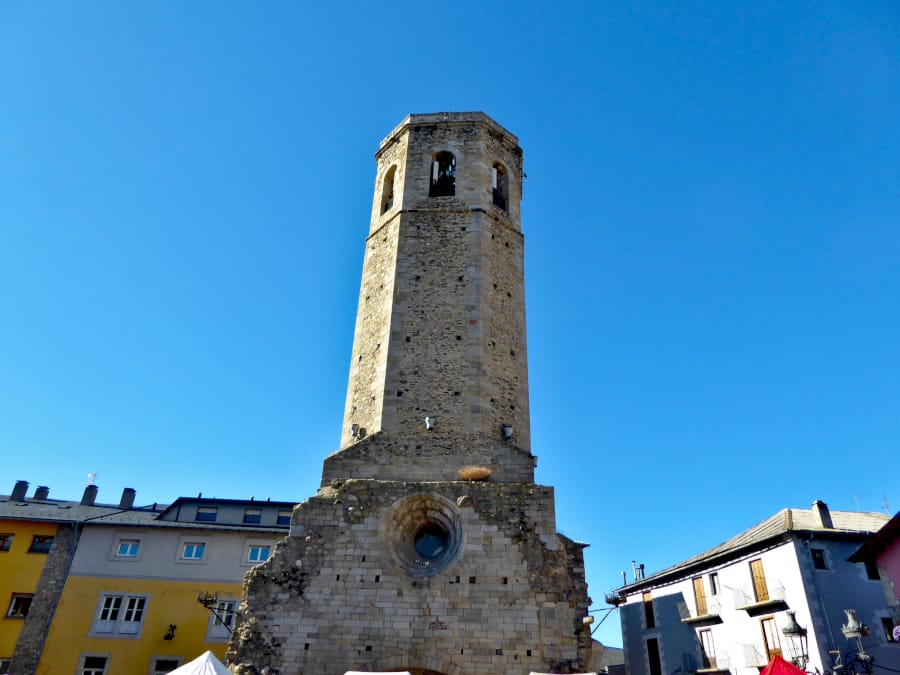
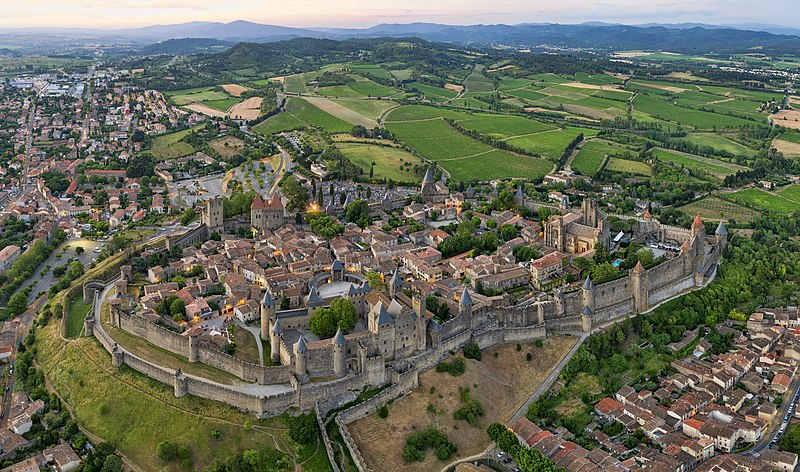

Esta es la página web sobre mi viaje
Viaje: Cerdanya- Carcassone.
Dia 1Saldremos de Santa Coloma de Gramenet a las 10:00 de la mañana en coche, para llegar sobre la hora de la comida al hotel de la Cerdanya. (2h de Santa Coloma de Gramenet hasta Puigcerdà)
Nos estableceremos en el hotel para dejar las maletas y descansar. Comeriamos por los alrededores y al acabar, iremos al Lago de Puigcerdà.
Al acabar la visita por el lago, iriamos a dormir al hotel un rato y al despertarnos, buscariamos la Iglesia de Santa Maria y nos adrentariamos en sus alrededores
Despues de pasear por los alrededores de la iglesia, buscariamos un sitio para cenar cerca del hotel y subiriamos a la habitacion a descansar
Dia 2Nos despertariamos temprano para ducharnos, bajar a desayunar y preparar la mochila, ya que en este dia, nos vamos de senderismo

Como la ruta es larga, tendremos que prepararnos o comprar la comida por nuestra cuenta. Por si acaso, tambien nos prepararemos una especie de merienda-cena. Al llegar de vuelta al hotel, subiriamos a dormir
Dia 3Hoy seria nuestro ultima dia de actividades en Puigcerdà. Primero de todo, bajamos a desayunar como hemos hecho las demas veces. A continuacion tendriamos 1h 20min hasta llegar al pueblo de Llívia.
Llegariamos sobre la hora de comer, asi que entrariamos al sitio donde vieramos algo de nuestro gusto. Despues de comer, visitariamos los puntos de interes que tiene el pueblo y una vez todo visto, nos marchariamos de vuelta al hotel para pasar nuestra ultima noche. Cenariamos algo rapido en los alrededores y aprovechariamos para descansar.
Dia 4Saldremos de Puigcerdà a las 10:00 de la mañana para llegar sobre la hora de la comida por la zona del hotel. (3h de Puigcerdà hasta el hotel de Carcassonne)
Comeriamos en algun sitio cercano y visitariamos la Ciudadela de Carcassonne. 
Una vez todo visitado, volveriamos para cenar cerca del hotel y subiriamos a dormir. Dia 5
Desayunariamos en el hotel y iriamos por Carcassonne para ir visitando la ciudad. Cuando se nos hubiera hecho tarde, parariamos para comer algo y una vez terminasemos, nos subiriamos a un barco, para que nos diese una vuelta por El Canal du Midi. Despues, explorariamos la zona donde nos dejase el barco, para mas tarde cenar por la zona y volver a nuestro hotel. Dia 6
Nos duchariamos y desayunariamos en el hotel. Hoy pasaremos el dia en la campiña francesa. Comeriamos en los alrededores a la hora en la que nos entrase hambre. Una vez que nos hayamos cansado, volveriamos a cenar por la zona del hotel y a dormir. Dia 7
Tomariamos nuestro ultimo desayuno en Carcassone y nos iriamos a jugar una pachanga de futbol con los del hotel. Saldriamos de Carcassonne sobre las 11:00 de la mañana y volveriamos a Santa Coloma de Gramenet para la hora de comer